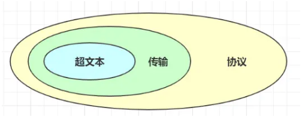
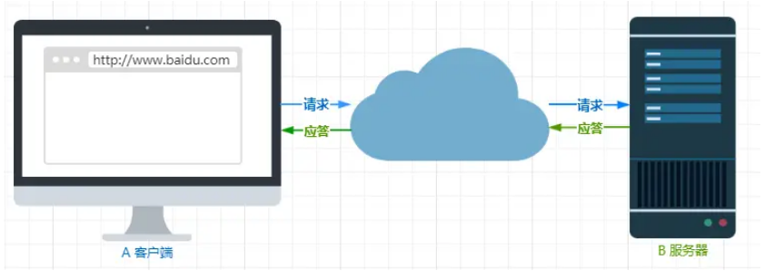

首页 > 编程笔记
HTTP协议到底是什么？
HTTP 是超文本传输协议，也就是 HyperText Transfer Protocol。
HTTP 的名字「超文本协议传输」，它可以拆成三个部分，分别是：超文本、传输和协议。
生活中的协议，本质上与计算机中的协议是相同的，协议的特点：
针对 HTTP 协议，我们可以这么理解。
HTTP 是一个用在计算机世界里的协议。它使用计算机能够理解的语言确立了一种计算机之间交流通信的规范（两个以上的参与者），以及相关的各种控制和错误处理方式（行为约定和规范）。
别轻视了这个简单的动作，它至少包含两项重要的信息。
HTTP 协议是一个双向协议。
我们在上网冲浪时，浏览器是请求方 A，百度网站就是应答方 B。双方约定用 HTTP 协议来通信，于是浏览器把请求数据发送给网站，网站再把一些数据返回给浏览器，最后由浏览器渲染在屏幕，就可以看到图片、视频了。
数据虽然是在 A 和 B 之间传输，但允许中间有中转或接力。
就好像第一排的同学想传递纸条给最后一排的同学，那么传递的过程中就需要经过好多个同学（中间人），这样的传输方式就从「A < --- > B」，变成了「A <-> N <-> M <-> B」。
而在 HTTP 里，需要中间人遵从 HTTP 协议，只要不打扰基本的数据传输，就可以添加任意额外的东西。
针对传输，我们可以进一步理解了 HTTP。
HTTP 是一个在计算机世界里专门用来在两点之间传输数据的约定和规范。
我们先来理解「文本」，在互联网早期的时候只是简单的字符文字，但现在「文本」的涵义已经可以扩展为图片、视频、压缩包等，在 HTTP 眼里这些都算作「文本」。
再来理解「超文本」，它就是超越了普通文本的文本，它是文字、图片、视频等的混合体，最关键有超链接，能从一个超文本跳转到另外一个超文本。
HTML 就是最常见的超文本了，它本身只是纯文字文件，但内部用很多标签定义了图片、视频等的链接，再经过浏览器的解释，呈现给我们的就是一个文字、有画面的网页了。
OK，经过了对 HTTP 里这三个名词的详细解释，就可以给出比「超文本传输协议」这七个字更准确更有技术含量的答案：
HTTP 是一个在计算机世界里专门在「两点」之间「传输」文字、图片、音频、视频等「超文本」数据的「约定和规范」。
那「HTTP 是用于从互联网服务器传输超文本到本地浏览器的协议」，这种说法正确吗？
这种说法是不正确的。因为也可以是「服务器< -- >服务器」，所以采用两点之间的描述会更准确。
HTTP 的名字「超文本协议传输」，它可以拆成三个部分，分别是：超文本、传输和协议。

1. 协议
在生活中，我们也能随处可见「协议」，例如：- 刚毕业时会签一个「三方协议」；
- 找房子时会签一个「租房协议」。
生活中的协议，本质上与计算机中的协议是相同的，协议的特点：
- 「协」字，代表的意思是必须有两个以上的参与者。例如三方协议里的参与者有三个：你、公司、学校三个；租房协议里的参与者有两个：你和房东。
- 「议」字，代表的意思是对参与者的一种行为约定和规范。例如三方协议里规定试用期期限、毁约金等；租房协议里规定租期期限、每月租金金额、违约如何处理等。
针对 HTTP 协议，我们可以这么理解。
HTTP 是一个用在计算机世界里的协议。它使用计算机能够理解的语言确立了一种计算机之间交流通信的规范（两个以上的参与者），以及相关的各种控制和错误处理方式（行为约定和规范）。
2. 传输
所谓的「传输」，很好理解，就是把一堆东西从 A 点搬到 B 点，或者从 B 点 搬到 A 点。别轻视了这个简单的动作，它至少包含两项重要的信息。
HTTP 协议是一个双向协议。
我们在上网冲浪时，浏览器是请求方 A，百度网站就是应答方 B。双方约定用 HTTP 协议来通信，于是浏览器把请求数据发送给网站，网站再把一些数据返回给浏览器，最后由浏览器渲染在屏幕，就可以看到图片、视频了。

数据虽然是在 A 和 B 之间传输，但允许中间有中转或接力。
就好像第一排的同学想传递纸条给最后一排的同学，那么传递的过程中就需要经过好多个同学（中间人），这样的传输方式就从「A < --- > B」，变成了「A <-> N <-> M <-> B」。
而在 HTTP 里，需要中间人遵从 HTTP 协议，只要不打扰基本的数据传输，就可以添加任意额外的东西。
针对传输，我们可以进一步理解了 HTTP。
HTTP 是一个在计算机世界里专门用来在两点之间传输数据的约定和规范。
3. 超文本
HTTP 传输的内容是「超文本」。我们先来理解「文本」，在互联网早期的时候只是简单的字符文字，但现在「文本」的涵义已经可以扩展为图片、视频、压缩包等，在 HTTP 眼里这些都算作「文本」。
再来理解「超文本」，它就是超越了普通文本的文本，它是文字、图片、视频等的混合体，最关键有超链接，能从一个超文本跳转到另外一个超文本。
HTML 就是最常见的超文本了，它本身只是纯文字文件，但内部用很多标签定义了图片、视频等的链接，再经过浏览器的解释，呈现给我们的就是一个文字、有画面的网页了。
OK，经过了对 HTTP 里这三个名词的详细解释，就可以给出比「超文本传输协议」这七个字更准确更有技术含量的答案：
HTTP 是一个在计算机世界里专门在「两点」之间「传输」文字、图片、音频、视频等「超文本」数据的「约定和规范」。
那「HTTP 是用于从互联网服务器传输超文本到本地浏览器的协议」，这种说法正确吗？
这种说法是不正确的。因为也可以是「服务器< -- >服务器」，所以采用两点之间的描述会更准确。
关注公众号「站长严长生」，在手机上阅读所有教程，随时随地都能学习。内含一款搜索神器，免费下载全网书籍和视频。

微信扫码关注公众号